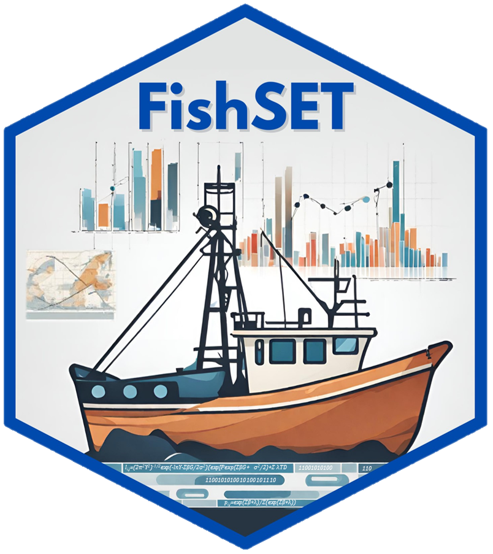
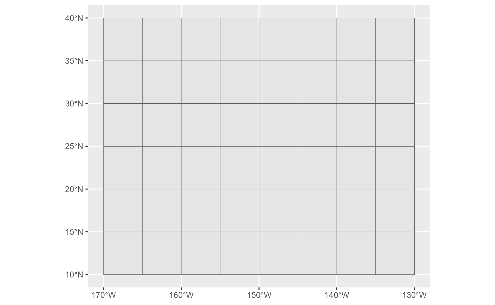
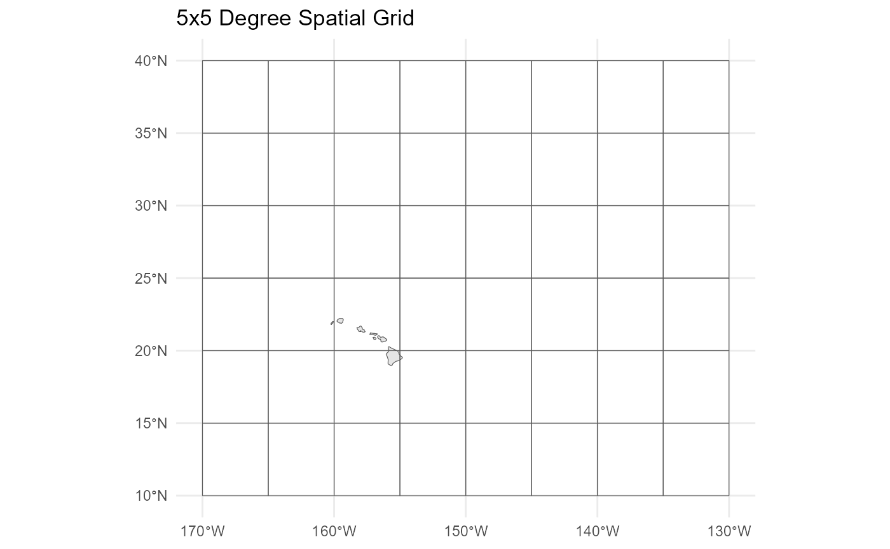

Making a spatial grid file
Paul Carvalho
2024-11-13
Source:vignettes/making_a_spatial_grid.Rmd
making_a_spatial_grid.RmdLoad packages
## Warning: package 'sf' was built under R version 4.3.3## Linking to GEOS 3.11.2, GDAL 3.8.2, PROJ 9.3.1; sf_use_s2() is TRUE## Warning: package 'ggplot2' was built under R version 4.3.2Create a spatial grid
# Define the bounding box of the grid
# latitude: 10 to 40 degrees N
# longitude: -170 to -130 degrees W
bbox <- c(xmin = -170, xmax = -130, ymin = 10, ymax = 40)
# Define the size of each grid cell
# 5 degree x 5 degree grid
cell_size <- c(x = 5, y = 5)
# Create the grid
grid_sf <- st_make_grid(
st_as_sfc(st_bbox(bbox)), # Bounding box for the grid
cellsize = cell_size, # Size of each cell
what = "polygons" # Grid cells as polygons
)
# Convert to an sf object
grid_sf <- st_sf(geometry = grid_sf, crs = 4326)If you have a spatial data table loaded as a dataframe, use the st_as_sf() function from the sf package to convert the dataframe to an sf object.
Add zone ID variable to the spatial object
The zone ID variable in the primary data table can be reassigned to match the zone IDs in the spatial grid object based on the lat/lon of fishing location in the primary data table.
Plot

# Add a world map layer to the plot
base_map <- ggplot2::map_data("world",
xlim = c(bbox["xmin"], bbox["xmax"]),
ylim = c(bbox["ymin"], bbox["ymax"]))
base_map <- FishSET::dat_to_sf(base_map, lon = "long", lat = "lat", id = "group",
cast = "POLYGON", multi = TRUE, crs = 4326)## The legacy packages maptools, rgdal, and rgeos, underpinning the sp package,
## which was just loaded, will retire in October 2023.
## Please refer to R-spatial evolution reports for details, especially
## https://r-spatial.org/r/2023/05/15/evolution4.html.
## It may be desirable to make the sf package available;
## package maintainers should consider adding sf to Suggests:.
## The sp package is now running under evolution status 2
## (status 2 uses the sf package in place of rgdal)
ggplot() +
geom_sf(data = base_map) +
geom_sf(data = grid_sf, fill=NA) +
theme_minimal() +
labs(title = "5x5 Degree Spatial Grid")